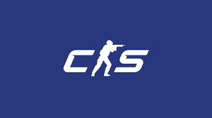
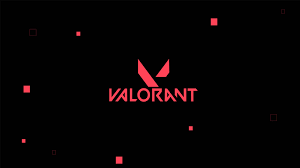

This task and playlist style focuses on targets that can either change size or directly randomly. It's great for building up your ability to make micro adjustments and prepares you for irregular player movement.
This task and playlist style focuses on targets that move at rapid or steady paces often changing in distance and size. This helps build up your ability to follow player movements this is especially helpful for games with heavy focuses on movement.
This task and playlist style focuses on targets that are stationary. The biggest change is going to be target size and distance. This helps build up your ability to flick accuractely to targets and insures you don't miss those easy shots.